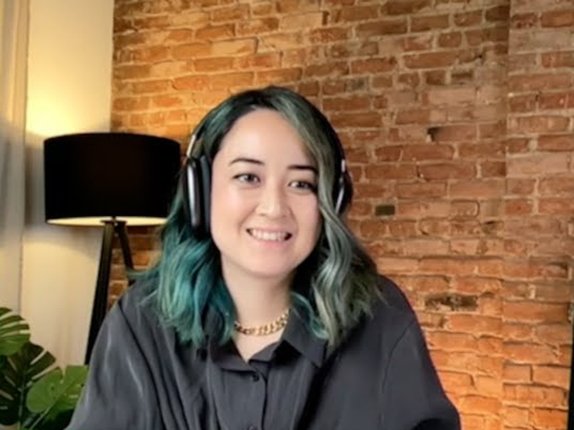

Say hello.
A live conversation with an AI avatar. Speak naturally, interrupt, or turn on your camera to show it something.
One call at a time. Microphone access is required; camera sharing is optional.
Experimental AI-generated video and voice. Calls can last up to ten minutes. Audio and enabled camera input are processed by the demo’s AI providers.